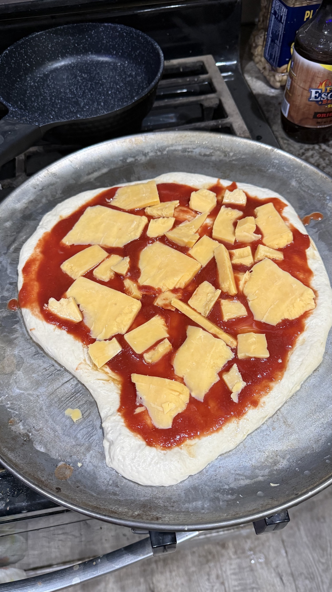
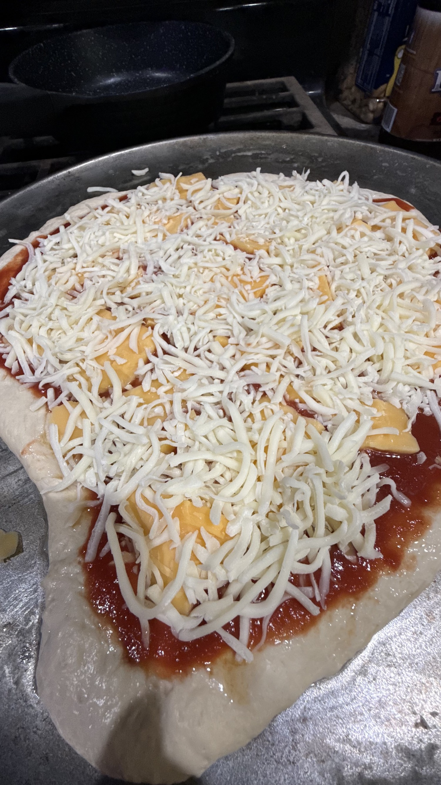
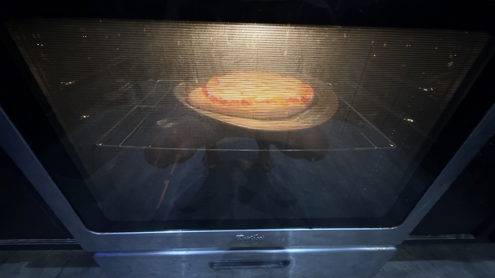
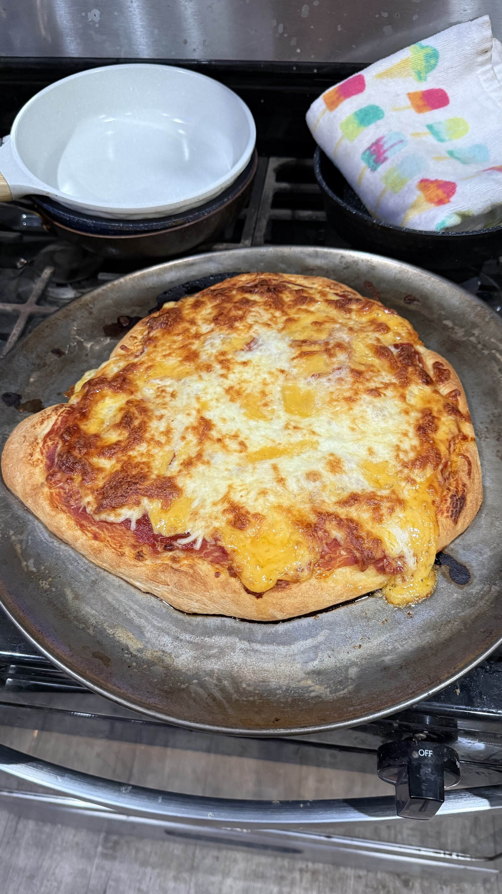
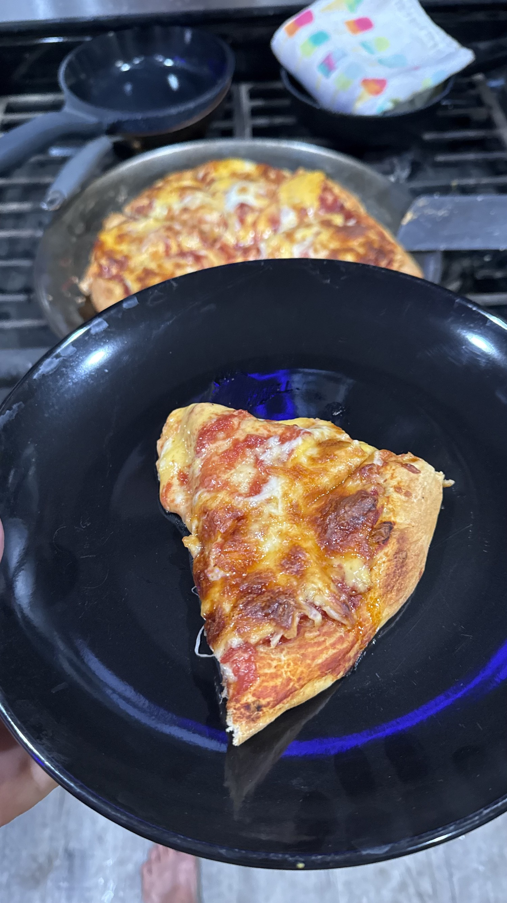

You do not need a pizza stone, a specialty oven, or hours of proofing. Fresh dough from an Italian deli already has good structure and flavor. Stretch it by hand on a metal pan, layer sauce and cheese the way the photos show, and bake it in a regular home oven. The sequence below is exactly what was done in one Tower District kitchen on a Saturday afternoon.
Dough, Sauce, and First Cheese
Buy a ball of pizza dough from the Italian deli the same day you plan to cook. Let it sit at room temperature for 20–30 minutes so it stretches without fighting you. Lightly oil a metal pizza pan, press the dough out by hand until it roughly fills the pan, and leave a slightly thicker edge for the crust. Spread a thin layer of red sauce (tomato or pizza sauce) across the surface, then scatter irregular chunks of a firmer yellow cheese — the kind that holds its shape while melting.

Shredded Mozzarella Layer
Cover the yellow cheese chunks generously with shredded mozzarella. This second layer melts into the first, creates the classic stretch, and browns nicely under the broiler or at high heat. Do not be shy — the photos show a full coverage.

Into the Oven
Place the pan on a middle rack of a preheated home oven. The photos were taken in a standard Whirlpool range. Bake until the crust is golden, the cheese is fully melted and starting to brown in spots, and the edges have some color. Exact time depends on your oven and how thick the dough is, but watch for the visual cues shown here.

Out of the Oven
When the cheese is bubbling and the crust has taken on color, pull the pan. Let it rest for a minute or two so the cheese sets slightly and the bottom firms up. The finished pizza shows the two-cheese blend melted together with browned spots and a puffed, golden edge.

Slice and Serve
Cut into wedges with a pizza wheel or large knife. A single slice shows the cheese pull, the sauce, and the crust texture. No special toppings were used — just the two cheeses and sauce on deli dough. That is the entire method.

Tower District Kitchen Note
All photos were taken in a working home kitchen in the High Tower District area of Fresno. The oven is a standard residential Whirlpool. The dough came from a local Italian deli. No commercial pizza equipment was used. The method is intentionally simple so it can be repeated on a weeknight with whatever is already in the fridge.
Try It Yourself
Pick up a ball of dough from your Italian deli, use the two-cheese layering shown here, and bake it in your own oven. The photos are the complete visual guide.
Share results or variations with the High Tower District community.
Sources
- Original photographs taken August 1, 2026 in a High Tower District kitchen.
- All images are primary documentation of the process shown.
- No external recipes or commercial product claims are made beyond the deli dough itself.